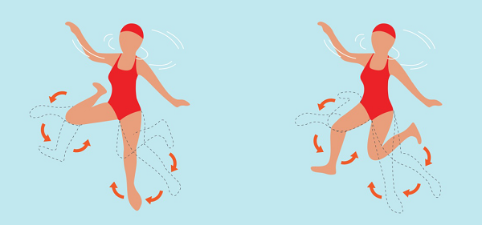
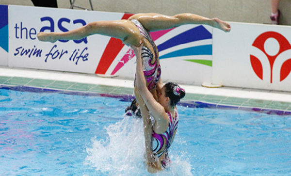

Senkronize yüzme, sporcuların müziğe göre tepki vermeleri ve buna göre suda yüzmeleri veya dans etmeleri gereken bir ritmik yüzme şeklidir. Dolayısıyla bu sporda kullanılan ekipmanlar diğer yüzme sporlarından oldukça farklıdır.
Sporcuların kullandığı ekipmana geçmeden önce senkronize yüzmenin yapıldığı oyun ortamını öğrenelim.
Oyun Ortamı
Senkronize yüzme, özel olarak tasarlanmış bir havuzda oynanır. Havuzdaki su temiz olmalı ve suyun sıcaklığı 25 derece civarında olmalıdır.
Havuzun boyutu en az 20 mx 30 m olmalı ve bunun içinde 12 mx 12 m alan en az 3 m derinliğinde olmalıdır.
Senkronize Yüzme Nasıl Yapılır?
Daha önceki günlerde senkronize yüzme Su Balesi olarak biliniyordu . Tarih, kaydedilen ilk uluslararası yarışmanın 1891’de Almanya’nın Berlin kentinde yapıldığını söylüyor. O olaydan sonra birçok ülke ilgi gösterdi ve ilgili ülkelerden kulüpler rekabete dayalı maçlar oynamak ve düzenlemek için kuruldu. Bu sporda gerçekleştirilen becerilerden bazıları şu şekildedir:
Yumurta çırpıcı
Tüm senkronize yüzücüler, yumurta çırpıcı becerisi hakkında net bir fikre sahip olmalıdır. Bu spordaki en temel becerilerden biridir. Bu beceride bir yüzücü stabiliteye ulaşabilir ve su üzerinde bir yüksekliğe ulaşabilir. Daha sonra diğer eylemleri gerçekleştirmek için ellerini serbest bırakabilir. Bir sporcu olabildiğince fazla yüksekliğe ulaşabilir, ancak ortalama boy göğüs hizası civarındadır.
Yine de bu bir spor ama koreografisi müzik ve dans nedeniyle yapıldı. Yumurta çırpıcı ile sporcu su seviyesinin üzerine çıkar ve diktir. Aynı zamanda, ya her iki kolunu ya da en az bir kolunu havaya kaldırmalıdır. Bununla bitmiyor. Bir yüzücü suyun üstündeki havada dikey olarak yukarı çıkmak isterse, boost tekniği vardır. Bu, bir yumurta çırpıcı birikimi ve ardından yüzücüyü sudan dikey olarak itmek için bacakların güçlü bir ekip çalışmasıyla gerçekleştirilir.

Kürek
Yumurta çırpıcı becerisi normalde bacaklar tarafından gerçekleştirilir, ancak tam tersine, kürek genellikle ellere bağlıdır. Diğer destekleyici sporcuların elleri, bir sporcunun vücudunu itmek için kullanılır. Senkronize yüzmede kullanılan farklı kürek türleri vardır.

Ünlü ve en çok kullanılan kürek teknikleri, destek kürek, torpido kürek ve pervane kürek tekniğidir .
Yaygın olarak uygulanan diğer teknikler de sabit kürek, timsah kürek, kürek kürek, namlu kürek ve kol kürekidir .
Eğitimde kullanılan ters kürek ve direkt pervane gibi başka kürekler de vardır .